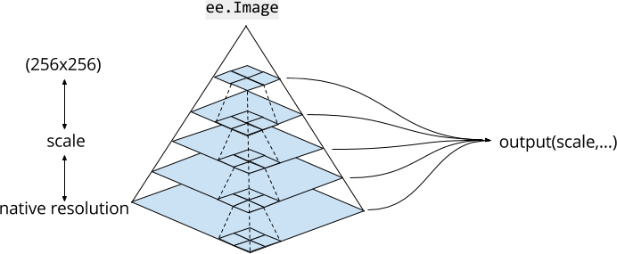
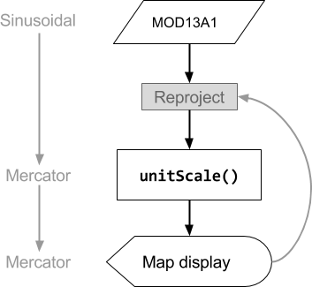
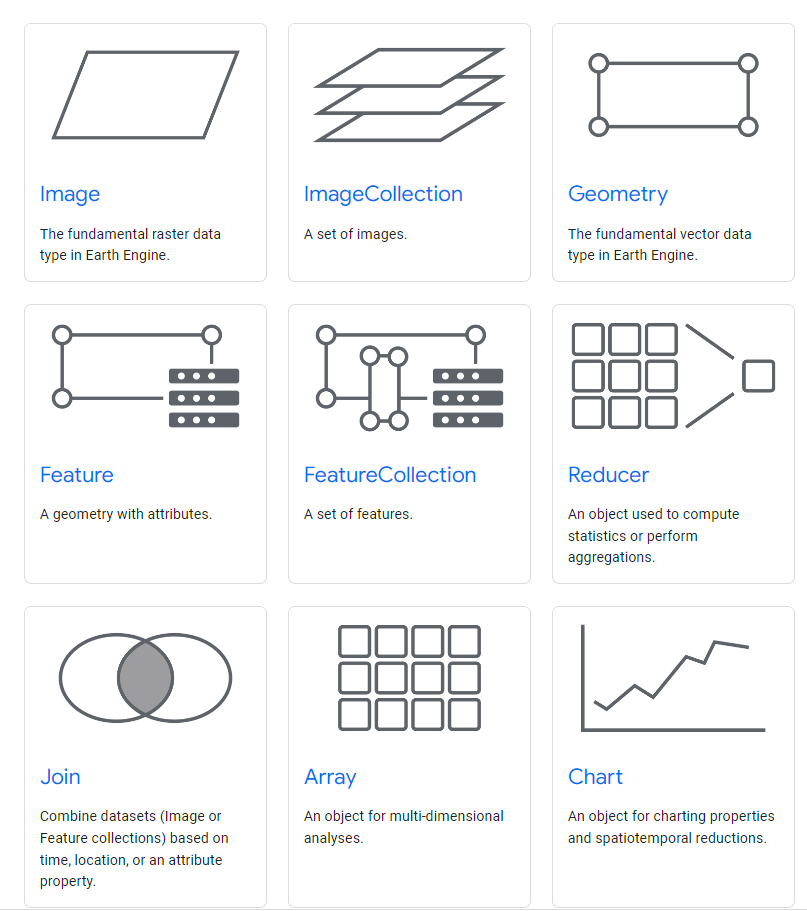
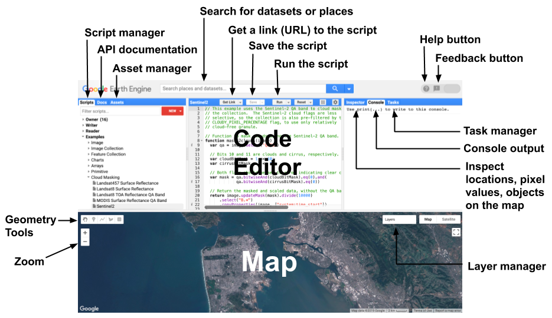

5 Introduction to Google Earth Engine
5.1 Summary
In this week, we will figure out “What is Google Earth Engine(GEE)” and
GEE is “Geospatial” processing service. It permits geospatial analysis at scale.
https://youtu.be/gKGOeTFHnKY
5.1.1 The set up of GEE
GEE has a image data as a raster(has bands) and Feature as a vector. Feature has geometry and attributes. Furthermore, Image stack called ImageCollection annd Feature stack called FeatureCollection.
Gee uses javascript(one of website programming language)
{// Use curly brackets {} to make a dictionary of key:value pairs.} var object = { foo: ‘bar’, baz: 13, stuff: [‘this’, ‘that’, ‘the other thing’] }; print(‘Print foo:’, object[‘foo’]);
Introduction to JavaScript for Earth Engine. Source: GEE
5.1.1.1 Client vs Server
Within GEE we have code that runs on the client side and server side. Client side is the browser. Server side is on the server where data is stored. Any thing that has ee in front of it is stored on the server.
Client vs Server side. Source: pintrest/codeboxx
5.1.1.2 Scale
Scale in GEE refers to pixel resolution. It is set by the output(not by input). GEE collects the image to fit a 256x256 grid and GEE select the pyramid with the closest scale to that of your analysis and re-samples as needed. When we do re-sample, it uses nearest neighbor by default.

Scale. Source: GEE
Let’s see an example, first load an image
var image = ee.Image(‘LANDSAT/LC08/C01/T1/LC08_044034_20140318’); var rgbVis = { bands: [‘B4’, ‘B3’, ‘B2’], min: 5964.56, max: 11703.44 }; Map.addLayer(image, rgbVis, “Landsat 8”);
Scale. Source: GEE
Next, select a band 4 and then change the scale
var band_4 = image.select(‘B4’); var printAtScale = function(scale) { print(‘Pixel value at’+scale+’ meters scale’, band_4.reduceRegion({ reducer: ee.Reducer.first(), geometry: band_4.geometry().centroid(), // The scale determines the pyramid level from which to pull the input scale: scale }).get(‘B4’)); }; printAtScale(10); // 8883 printAtScale(30); // 8883 printAtScale(50); // 8337 printAtScale(70); // 9215 printAtScale(200); // 8775 printAtScale(500); // 8300 Copy Code
Source: Code example
5.1.1.3 Projection
GEE converts all data into the Mercator projection(EPSG:3867). As a result, the operations of the projection are decided by the output.

Source: GEE
5.1.2 GEE in action(how we use it)
5.1.2.1 Building blocks of GEE
Object can be vector, raster, feature, string and number. Each of objects belong to a class and each class have specific functions.

Object classes. Source: GEE
5.1.2.2 What does GEE look like

Source: Form of GEE
5.1.2.3 Typical processes in GEE
After we have lots of images(raster data) and these belong to an imagecollection. We can process geometry operations, methods and applications.
Geometry operations
Joins
Zonal statistics
Filtering of images or specific values
Methods
Machine learning
Supervised and unsupervised classification
Deep learning with Tensor Flow
Exploring relationship between variables
Exploring relationship between variables
Applications
Online charts
Scalable geopspatial applications with GEE data
These let us query the data with a user interface that then updates the results